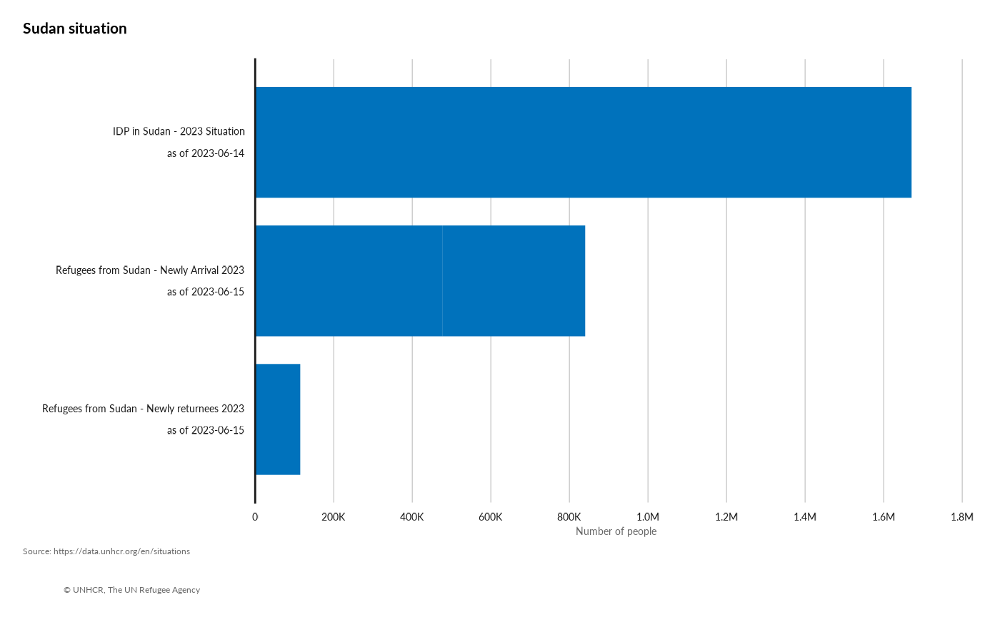

get-started.Rmd
library(unhcrdataportal)This package include only one function called odp. The
function is then made available through a shinyApp.
Beyond the function, this vignette is an opportunity to demonstrate
how to turn an initial script into a package as the original idea came
from from this script:
Why is it worth documenting your function as package?
According to chatGPT, Documenting R functions as packages provides several benefits:
Reproducibility and Maintainability: Packages encapsulate the code, data, and documentation required to perform a specific task or provide a set of functionalities. By documenting your R functions within a package, you ensure that the code is self-contained and can be easily shared and reproduced by others. This helps maintain the integrity of your code and simplifies the process of maintaining and updating it over time.
Ease of Use: Documenting your functions within a package allows you to provide clear and comprehensive documentation, including details about the function’s purpose, arguments, return values, and usage examples. This makes it easier for other users (including yourself in the future) to understand how to use your functions effectively. Well-documented packages increase the discoverability and accessibility of your code, making it more likely to be adopted and utilized by others.
Collaboration and Community Contribution: By creating a package with documented functions, you can encourage collaboration within the R community. Others can easily install and use your package, providing feedback, suggesting improvements, and even contributing their own enhancements or bug fixes. Documentation is crucial for enabling others to understand your codebase and contribute effectively, fostering an active and vibrant community around your package.
Versioning and Dependency Management: Documenting your R functions within a package allows you to manage versioning and dependencies more effectively. Packages can specify the version requirements for other packages they rely on, ensuring that users have the correct versions installed to avoid compatibility issues. This helps maintain the reproducibility of your code across different environments and simplifies the process of managing package dependencies.
Integration with R Ecosystem: Packaging your functions makes it easier to integrate them with other tools and libraries in the R ecosystem. R packages can leverage existing packages and take advantage of their functionality, creating a more cohesive and interconnected ecosystem. By documenting your functions within a package, you contribute to this ecosystem and enable seamless integration with other tools and workflows.
Overall, documenting R functions within a package brings structure, reproducibility, ease of use, collaboration opportunities, and integration capabilities. It enhances the accessibility, maintainability, and adoption potential of your code, benefiting both yourself and the wider R community.
What does it take to turn a script into a documented package?
Install FUSEN package
Start a project as a FUSEN
document the 0-dev_history.Rmd to initialize the package
during the process associate it with a github repostory that you have created
get into the function and prefix all the function with package
they comes from - while doing this document them as
@importFrom
document the function parameters @param
review the function and insert comments within the script to explain what you are doing in the script - actually chatGPT is quite effective to help you doing this
then go to the chunk examples - and document examples. Make sure you document your example and link them to practical use cases. Assumes that your target users has little knowledge of the context
then set up a few unit testing - actually chatGPT is quite effective to help you doing this
inflate your fusen markdown
add a global file with the following #
remotes::install_github(“thinkr-open/checkhelper”)
checkhelper::print_globals()
review your readme.Rmd and inject back there your business use cases
build the companion website for the documentation with
pkgdown::build_site()
push back everything to github
Et voila…
## to retrieve the datasets for a specific country /situation datasit
if you want to widen your package audience, make your function available through a web interface so that users can avoid rstudio desktop installation :
create a Shiny App function called run_app() that
will display some interactivity around your function
Set up a launcher app.R script at the root of the
package
Use the launcher to deploy it to UNHCR rstudio server: http://rstudio.unhcr.org
## Run the shiny App
# run_app()